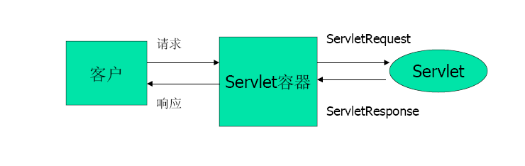

Servlet简介
- Java Servlet是和平台无关的服务器端组件，它运行在Servlet容器中。Servlet容器负责Servlet和客户的通信以及调用Servlet的方法，Servlet和客户的通信采用“请求/响应”的模式。
- Servlet可完成如下功能：
- 创建并返回基于客户请求的动态HTML页面。
- 创建可嵌入到现有HTML页面中的部分HTML页面（HTML片段）。
- 与其它服务器资源（如数据库或基于Java的应用程序）进行通信。
Servlet容器响应客户请求的过程

初学Servlet
首先Eclipse建一个动态网页项目（直接点击 file 然后 new 里面的 Dynamic Web Project）。
创建一个Servlet接口的实现类（在src文件夹下创建com文件夹，然后再com文件夹下创建servlet文件夹，类可以直接写在该文件夹下）。
在web.xml中配置和映射这个Servlet
在WebContent目录下的WEB-INF目录下新建web.xml文件（可以从tomcat安装目录下的conf文件夹下找到tomcat的web.xml文件，复制骨架过来）。
两处的
<servlet-name>必须一样这里的com.servlet.controller.HelloServlet是Servlet的实现类的路径。
打开localhost:8080/day19/hello(注意：如果没有修改端口号的话，默认一般就是8080，day19换成自己的项目名，hello是web.xml里面配置的url-pattern根目录)。
Servlet容器：运行Servlet、JSP、Filter等的软件环境
- 可以来创建Servlet，并调用Servlet的相关生命周期方法
- JSP，Filter，Listener，Tag…
Servlet 生命周期方法：以下方法都是由Servlet容器负责调用
- 构造器: 只被调用一次。只有第一次请求 Servlet 时，创建 Servlet 实例，调用构造器（说明 Servlet 是单实例的）。
- init 方法：只被调用一次。在创建好实例后立即调用，用于初始化 Servlet。
- service：多次调用。每次请求都会调用，实际用于响应请求的。
- destroy：只被调用一次。在当前 Servlet 所在的 WEB 应用被卸载前调用。用于释放当前 Servlet 所占用的资源。
load-on-startup 参数：
配置在 servlet 节点中：
123456<servlet><servlet-name>helloServlet</servlet-name><servlet-class>com.servlet.controller.HelloServlet</servlet-class><!--可以指定Servlet被创建的时机--><load-on-startup>1</load-on-startup></servlet>load-on-startup: 可以指定 Servlet 被创建的时机。若为负数，则在第一次请求时被创建，若为 0 或正数，则在当前 WEB 应用被 Servlet 容器加载时创建实例，且数值越小越早被创建。
12345678910<servlet><servlet-name>helloServlet</servlet-name><servlet-class>com.servlet.controller.HelloServlet</servlet-class><load-on-startup>3</load-on-startup></servlet><servlet><servlet-name>secondServlet</servlet-name><servlet-class>com.servlet.controller.SecondServlet</servlet-class><load-on-startup>1</load-on-startup></servlet>
例如上面代码的配置，先执行 secondServlet 后执行 helloServlet
Servlet的注册与运行
Servlet程序必须在WEB应用程序的web.xml文件中进行注册和映射其访问路径，才可以被Servlet引擎加载和被外界访问。
一个
<servlet>元素用于注册一个Servlet，它包含有两个主要的子元素：<servlet-name>和<servlet-class>，分别用于设置Servlet的注册名称和Servlet的完整类名。一个
<servlet-mapping>元素用于映射一个已注册的Servlet的一个对外访问路径，它包含有两个子元素：<servlet-name>和<url-pattern>，分别用于指定Servlet的注册名称和Servlet的对外访问路径。同一个Servlet可以被映射到多个URL上，即多个
<servlet-mapping>元素的<servlet-name>子元素的设置值可以是同一个Servlet的注册名。（如下）
|
|
在Servlet映射到的URL中也可以使用 通配符，但是只能有两种固定的格式：一种格式是“ .扩展名”，另一种格式是以正斜杠（/）开头并以“/*”结尾。
ServletConfig接口：封装了 Servlet 的配置信息，并且可以获取 ServletContext 对象
配置 Servlet 的初始化参数
获取初始化参数:
getInitParameter(String name):获取指定参数名的初始化参数
getInitParameterNames():获取参数名组成的 Enumeration 对象
获取 Servlet 配置名称（了解）
ServletContext接口
- Servlet引擎为每个WEB应用程序都创建一个对应的ServletContext对象，ServletContext对象被包含在ServletConfig对象中，调用ServletConfig.getServletContext方法可以返回ServletContext对象的引用。
- 由于一个WEB应用程序中的所有Servlet都共享同一个ServletContext对象，所以，ServletContext对象被称之为 application 对象（Web应用程序对象）。Eclipse中修改java代码要记得clean一下。
- 方法： getInitParameter,getInitParameterNames,getRealPath(String path),getContextPath()12345<!-- 配置当前WEB应用的初始化参数 --><context-param><param-name>driver</param-name><param-value>com.mysql.jdbc.Driver</param-value></context-param>
|
|
context-param 设置的初始化参数可以被所有的 Servlet 获取，而 init-param 设置的初始化参数只能被所属的 Servlet 获取
getRealPath(String path):获取当前 WEB 应用的名称
getContextPath():获取当前 WEB 应用的某一个文件对应的输入流。
12String contextPath = servletContext.getContextPath();System.out.println("contextPath: " + contextPath);getResourceAsStream(String path):path的 / 为当前WEB应用的根目录(两种写法)
12345678910111213try{ClassLoader classLoader = getClass().getClassLoader();InputStream is = (InputStream) classLoader.getResourceAsStream("jdbc.properties");System.out.println("is: " + is);}catch(Exception e){e.printStackTrace();}try{InputStream is2 = (InputStream) servletContext.getResourceAsStream("/WEB-INF/classes/jdbc.properties");System.out.println("is2: " + is2);}catch(Exception e){e.printStackTrace();}
java中有两个包都包含InputStream，而在使用IDE工具时可能会默认把org.omg.CORBA.portable.InputStream这个包放在前面的。
解决方法：1 手动把org.omg.CORBA.portable.InputStream包换成 java.io.InputStream
或者 2 在使用IDE自动补全时向下选择 java.io.InputStream中的InputStream